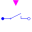

IdealOpeningSwitchIdeal electrical opener |
|
Information
This information is part of the Modelica Standard Library maintained by the Modelica Association.
The switching behaviour of the ideal opening switch is controlled by the input signal control: off = control.
For further details, see partial model IdealSwitch.
Parameters (4)
| useHeatPort |
Value: false Type: Boolean Description: = true, if heatPort is enabled |
|---|---|
| T |
Value: 293.15 Type: Temperature (K) Description: Fixed device temperature if useHeatPort = false |
| Ron |
Value: 1e-5 Type: Resistance (Ω) Description: Closed switch resistance |
| Goff |
Value: 1e-5 Type: Conductance (S) Description: Opened switch conductance |
Connectors (4)
| p |
Type: PositivePin Description: Positive electrical pin |
|
|---|---|---|
| n |
Type: NegativePin Description: Negative electrical pin |
|
| heatPort |
Type: HeatPort_a Description: Conditional heat port |
|
| control |
Type: BooleanInput Description: true => switch open, false => p--n connected |
Used in Examples (3)
|
Modelica.Electrical.Machines.Examples.InductionMachines InductionMachineSquirrelCage Steinmetz-connection |
|
|
Modelica.Magnetic.FundamentalWave.Examples.BasicMachines.InductionMachines Induction machine with squirrel cage and Steinmetz-connection |
|
|
Modelica.Thermal.HeatTransfer.Examples Control temperature of a resistor |
Used in Components (1)
|  |
Modelica.Electrical.Polyphase.Ideal Polyphase ideal opener |